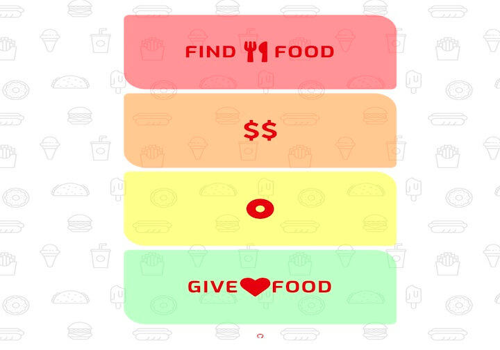
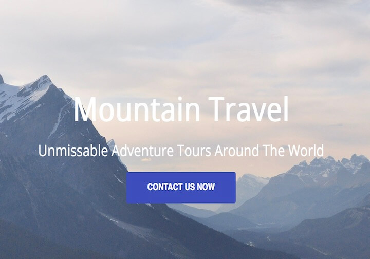
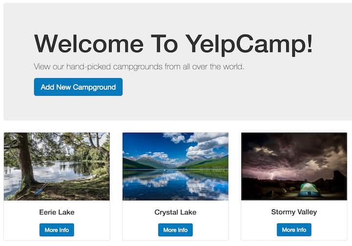

Experiments
-

ChowChow
Responsive app built with Node.js and Express. Uses geolocation and integrates with Yelp's Fusion API to find food fast.
-

Landing Page
This landing page template is crisp and responsive courtesy of HTML5, Flexbox, and CSS media queries.
-

YelpCamp
Yelp clone where you share and review campgrounds. Practice with Node.js, Express, MongoDB, and Passport.js.
-

ReSTful Blog
Blog prototype built on Node.js, Express, MongoDB, and Mongoose. Test drives Semantic UI, and adheres to ReSTful best practices.
-

CircleTap
Patatap clone leveraging the amazing Paper.js and Howler.js libraries to create a dance party in your browser.
-

To-Do List
Everyone makes a to-do app... this one's a jQuery experiment.
-

Color Game
Generates a grid of random colors, and let's users try to guess the RGB value. Pure HTML, CSS and Javascript.
-

DeadlySyn Website
You're looking at it... The usual suspects: HTML, CSS and Javascript. Originally built using Bootstrap 4, but continues to evolve!